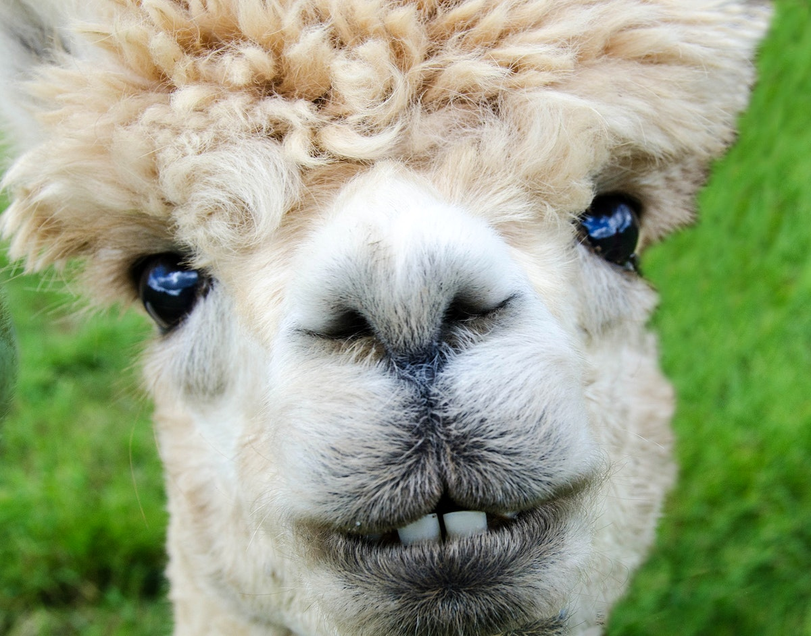
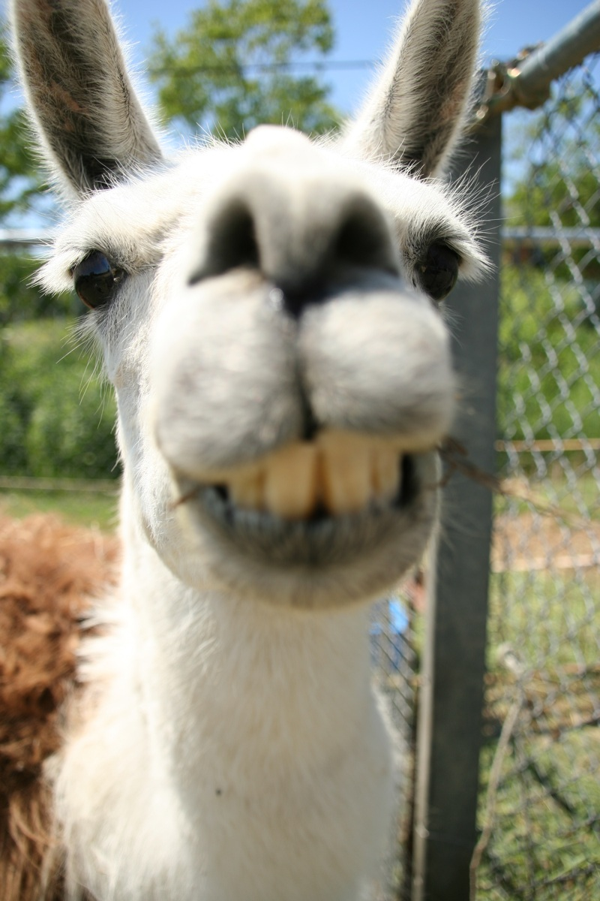

TThe temperaments and behaviors of both llamas and alpacas are extremely similar to one another. However, llamas tend to be more aggressive compared to the average alpaca, though both of these animals will spit if they feel threatened. In addition, alpacas enjoy living in a happy herd, while llamas do as well, but not to the same extent as alpacas.
Alpacas are very gentle and shy. Alpacas are more comfortable as herd animals. While both llamas and alpacas both spit, the alpaca will only spit as their last resort when they’re angry or scared.

The llama is a very confident and brave animal. Llamas are solitary animals. One thing llamas are known for is spitting, which they do quickly when they feel threatened.
